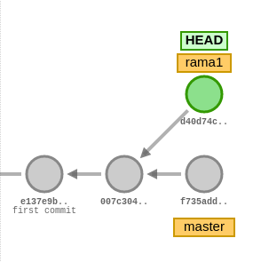

Manejo básico de Git
Referencias
- Libro de Git
- Hoja de referencia de Git
- Hoja de referencia de Git (PDF)
- Herramienta "Visualizing Git" (muy interesante para comprender el funcionamiento interno de Git y el trabajo con ramas y remotos)
Contenidos
Ramas
Definición de ramas
- Una rama es un puntero que apunta a un determinado commit.
- Un repositorio debe tener una rama como mínimo.
- El nombre de la rama que se crea por defecto es
master. Este nombre no es especial ni tiene una función o significado especial. En GitHub la rama que se crea por defecto si se inicializa un repositorio a través de su interfaz web (lo veremos en la sesión siguiente) se llamamain. - Existe un puntero especial llamado
HEADque apunta a la rama en la que estamos en ese momento. - Al cambiar de rama se modifica el contenido del directorio de trabajo: éste se muestra tal como estaba en la rama a la que hemos saltado.
- La creación y el cambio de ramas se realizan de forma instantánea: no tienen apenas coste.
- El trabajo con ramas es muy interesante por los siguientes motivos:
- Se pueden hacer pruebas sin modificar el código en producción.
- Se puede separar el trabajo en tareas o subproyectos que no afecten unos a otros.
- Cada miembro del equipo puede trabajar sin ser interferido por los demás.
Crear ramas
git branch <nombre_rama>
Este comando creará una rama nueva con el nombre seleccionado. Si no se indica ningún parámetro adicional, la rama creada apuntará HEAD, es decir, el último commit de la rama en la que nos encontremos.
Una alternativa es ejecutar git checkout -b <nombre_rama>. Este comando creará una rama con el nombre indicado y cambiará a dicha rama.
Es posible crear una rama que apunte a un commit o una rama determinada mediante el comando:
git branch <nombre_rama> <COMMIT**HASH>
git branch <nombre_rama> <NOMBRE_RAMA**EXISTENTE>
Ver ramas disponibles
git branch
Este comando mostrará las ramas locales existentes en el repositorio. Si se desea ver las ramas existentes en el remoto (ver sección siguiente) se puede ejecutar git branch --all.
Cambiar de rama
git checkout <nombre_rama>
git switch <nombre_rama>
Cualquiera de los dos comandos anteriores cambiará a la rama indicada. Es posible que el comando falle si hay cambios en el directorio de trabajo que no estén integrados en ningún commit: si dichos pueden ser sobreescritos por los cambios de la rama a la que se desea cambiar, git abortará el cambio de rama y nos indicará el problema. En ese caso deberemos crear un commit con los cambios que estemos realizando (o bien guardarlos mediante git stash) y a continuación volver a ejecutar el comando de cambio de rama.
Fusionar una rama
Fusionar una rama, en inglés /merge/, consiste en incorporar los cambios presentes en una rama a la rama en la que nos encontramos actualmente. Para realizar una fusión hay que realizar las siguientes acciones:
- Primero nos posicionamos en la rama sobre la que se va a realizar la fusión (la rama que va a recibir los cambios)
-
Para realizar la fusión ejecutar:
git merge <nombre_rama_a_fusionar>
Si por ejemplo queremos integrar en la rama principal (master) los cambios presentes en la rama feature1, cambiaremos a la rama principal (si no estamos ya en ella) mediante git checkout master y a continuación ejecutaremos git merge feature1.
Conflictos
Al fusionar una rama pueden producirse conflictos. Un conflicto se produce cuando diferentes commits introducen cambios en las mismas líneas de los mismos archivos. Si por ejemplo estamos en un commit referenciado por dos ramas y realizamos desde ese punto común un commit en cada una de las ramas de manera que afecten a la misma línea del mismo fichero, se producirá un conflicto al fusionar una rama en la otra.

Por ejemplo, en esta imagen podría producirse un conflicto si queremos incorporar los cambios de la rama master en la rama rama1 mediante git merge master (siempre que los cambios producidos en los commits afecten a las mismas líneas de los mismos ficheros).
Al producirse un conflicto, git no sabe qué cambios deben prevalecer: los de la rama A, los de la rama B, los dos, ninguno, algo totalmente distinto,... En este caso es necesaria la intervención humana. Git modificará los ficheros afectados incluyendo delimitadores para indicar los cambios que vienen de una rama y los que vienen de HEAD, es decir, de la rama en la que nos encontremos.
Es importante recalcar que git no perderá información: la incluirá toda, junto con los delimitadores para identificar la procedencia de los cambios.
Si se produce un conflicto git quedará en un estado intermedio: añadirá al área de preparación (color verde) los archivos que no presenten conflictos e indicará los archivos en conflicto, en color rojo, para que el usuario los edite y resuelva los conflictos.
Resolver los conflictos pasa por editar el archivo, localizar los delimitadores y dejar el archivo como queremos que quede. Normalmente esta última acción consistirá en decidir qué cambios son los que queremos dejar y eliminar los delimitadores. Al final, el fichero debe quedar tal como queremos que quede: en ocasiones una de las versiones será la correcta; en otras, la otra versión; en otras, ninguna; en obras, ambas; en otras, algo totalmente distinto.
Una vez resuelto el conflicto en todos los archivos habrá que ejecutar los comandos git add y git commit para crear un commit que resuelva el conflicto.
Eliminar una rama
git branch -d <nombre_rama>
Este comando eliminará la rama local indicada. IMPORTANTE: la eliminación de una rama supone la eliminación del puntero que hace referencia a un determinado commit. Si al eliminar una rama se quedan commits sin referenciar, dichos commits se perderán: pueden recuperarse durante un tiempo solo si se conocen sus /hash/; git realiza también tareas de limpieza al realizar algunas acciones y procede a limpiar los commits "huérfanos", por lo que pasado un tiempo ni siquiera se podrán recuperar a través de sus /hash/.
En el ejemplo siguiente, si se elimina la rama test1 se perderán los commits 5aebbf7, 897742a y 6ba47e7, ya que no habrá ninguna rama que haga referencia a ellos.

Remotos
Los repositorios remotos son versiones del proyecto que están alojadas en un servidor web o en una carpeta accesible a través de la red.
Los repositorios remotos se almacenan en una forma especial denominada /bare/, que no dispone de directorio de trabajo.
Los repositorios remotos pueden estar configurados como solo lectura o lectura/escritura.
Los repositorios remotos suelen utilizarse como punto de referencia de alojamiento del código: es posible realizar copias de dicho repositorio remoto denominadas clones, que pueden evolucionar de manera independiente. Esto hace que git sea un sistema descentralizado de gestión de código, ya que cada clon es un repositorio completo e independiente del resto.
Es posible sincronizar los cambios de un repositorio remoto a partir de los cambios de un repositorio local y viceversa.
Clonar un repositorio
git clone <URL_REPOSITORIO>
Este comando permite clonar un repositorio remoto a partir de su URL. También es posible indicar una ruta del sistema de ficheros. Por defecto se mostrará la rama principal del repositorio remoto. El resto de ramas no aparecen como ramas locales, aunque pueden obtenerse.
Al clonar un repositorio se crea una referencia al remoto en el repositorio local con el nombre origin que hace referencia a la URL indicada.
Ver remotos
git remote -v
Este comando permite ver los remotos configurados. Otra alternativa es ejecutar git remote show <nombre_del_remoto para ver los detalles del repositorio remoto.
Añadir, eliminar y renombrar remotos
git remote add <NOMBRE_REMOTO> <URL_REPOSITORIO> # Añadir remoto
git remote rm <NOMBRE_REMOTO> # Eliminar remoto
git remote rename <NOMBRE_ORIGINAL> <NOMBRE_NUEVO> # Renombrar remoto
Estos comandos permiten añadir y editar repositorios remotos. Un repositorio local puede tener 0 o más remotos.
Traer información del remoto
```bash # Este comando NO realiza la fusión en la rama local # Si se desean incorporar los cambios habría que realizar un git merge
git fetch Este comando permite actualizar la información de los repositorios remotos. `git` se conecta al remoto y comprueba si hay nuevos cambios en las ramas remotas; si es así, actualiza los punteros de las ramas remotas del repositorio local para reflejar dichos cambios. **Pero no incorpora los cambios a las ramas locales**.
Cuando un repositorio tiene configurado un remoto, git crea **en el repositorio local** unos punteros que hacen referencia a las **ramas remotas**. Dichos punteros son similares a las ramas locales, con la peculiaridad de que **no se puede cambiar a una rama remota**. Es decir, las ramas remotas son de **solo lectura**: hacen referencia a la información que tiene git de la situación del repositorio remoto (dónde están las ramas en el repositorio remoto).
En este punto es necesario insistir en la idea de que git es un sistema **descentralizado**: **git no se está ejecutando continuamente** (no es un demonio o un servicio), por lo que no está en contacto continuo con el remoto; si se producen cambios en el remoto (porque otra persona ha realizado un commit en una rama, por ejemplo), **el repositorio local no se sincronizará automáticamente**, sino que para él la rama remota seguirá en el mismo lugar que estaba cuando realizó el último `fetch`; si a continuación de dicho cambio se ejecuta un nuevo `fetch`, entonces el repositorio local tomará conciencia del nuevo cambio en la rama remota y **actualizará el puntero de dicha rama remota** al nuevo commit.
En resumen: `git fetch` es la única manera de que el repositorio local tenga conciencia de que ha habido cambios en el repositorio remoto.
#### Traer y fusionar cambios del remoto
```bash
git pull <NOMBRE_REMOTO> <NOMBRE_RAMA> # Pull = fetch + merge
Un pull equivale a dos acciones: un fetch y un merge. Mediante fetch, git comprueba los cambios que hay en las ramas remotas y los refleja en los punteros de las ramas remotas en el repositorio local; a continuación, la acción merge incorpora los cambios de la rama remota a la rama local correspondiente.
Esta operación es una de las más habituales a la hora de sincronizar los cambios con el repositorio remoto. En la mayoría de los casos, las ramas local y remota están asociadas: es decir, git ha sido informado de que dicha rama local tiene que sincronizarse con la rama remota correspondiente. Lo más habitual es que ambas ramas (local y remota) tengan **el mismo nombre_. En ese caso bastará con ejecutar git pull sin parámetros: git asumirá que si estamos en la rama rama1, por ejemplo, tiene que sincronizarse con la rama rama1 remota.
Dicho todo esto, es posible fusionar el contenido de una rama remota en otra rama distinta a la asociada. Las ramas remotas pueden ser referenciadas como <nombre_remoto>/<nombre_rama**remota>. Así, la rama origin/rama1 hará referencia a la rama rama1 del repositorio remoto origin. Si estamos posicionados en la rama master local podríamos incorporar los cambios de la rama remota origin/rama1 de dos maneras:
- Ejecutando
git merge origin/rama1- Directamente estaremos incorporando los cambios de la rama remotaorigin/rama1en la rama localmaster. En este caso, la rama localrama1no recibiría los nuevos cambios que pudiera tener la rama remotaorigin/rama1 - Otra opción sería:
- Cambiar a la rama local
rama1:git checkout rama1 - Fusionar los cambios de su rama remota asociada:
git pull, ogit pull origin rama1si no estuvieran asociadas. En este punto, la rama localrama1recibiría los nuevos cambios que pudiera haber en la rama remotaorigin/rama1 - Cambiar de nuevo a la rama local
master:git checkout master - Por último, fusionar los cambios de la rama local
rama1:git merge rama1
No hay una manera mejor que otra: simplemente hay que tener claro qué acciones se están ejecutando y qué cambios es están produciendo.
Enviar cambios al remoto
git push <NOMBRE_REMOTO> <NOMBRE_RAMA>
Esta operación permite enviar los commits locales de una rama a la rama indicada del repositorio remoto. Sería el inverso de pull: mientras que pull trae cambios del remoto, push los envía.
Tal como pasa con git pull, la mayoría de las veces las ramas local y remota están asociadas, por lo que si ejecutamos git push sin parámetros se enviarán los cambios de la rama en que nos encontremos a la rama remota asociada (la mayoría de las veces tendrán el mismo nombre).
Ramas asociadas
Anteriormente hemos hecho referencia al concepto de rama asociada. Una rama asociada es una rama local configurada para *hacer referencia a una rama determinada del repositorio remoto*. Si una rama está asociada a una rama remota, al situarnos en dicha rama y ejecutar un git push o un git pull haremos referencia a la rama remota asociada correspondiente sin necesidad de tener que especificarla en dichos comandos.
Podemos asociar una rama a una rama remota de varias maneras:
- Al ejecutar un
git cloneautomáticamente se crea una rama local principal (normalmente con el nombremasteromain) asociada a la rama remota principal (masteromain, casi siempre). - Al realizar un cambio de rama local a una rama existente en el repositorio remoto mediante
git checkout <rama_existente_en_remoto>se creará una rama local **con el mismo nombre que la rama remota* y se realizará la asociación de dichas ramas. Por ejemplo, si en el remoto existe una rama principalmastery una segunda rama llamadarama1, al realizar el clonado solamente tendremos disponible en local la ramamaster; si a continuación ejecutamosgit checkout rama1veremos que se crea la rama localrama1, que apunta al mismo commit que la rama remota correspondiente y que ambas ramas quedan asociadas. - Si creamos una rama local nueva que no exista en el repositorio remoto, podemos posicionarnos en dicha rama y a continuación ejecutar el comando
git push -u <nombre_remoṭo> <nombre_rama>para **crear una rama remota del mismo nombre*, sincronizarla con la rama local y realizar la asociación de dichas ramas. La opción clave es la opción-u, equivalente a--set-upstream.